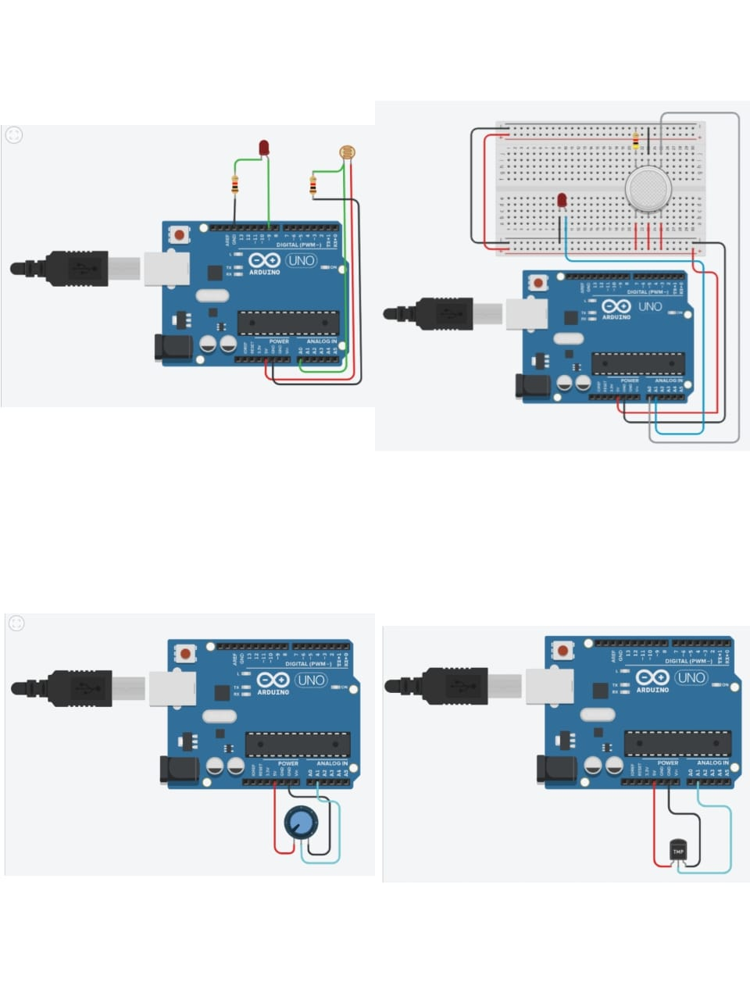
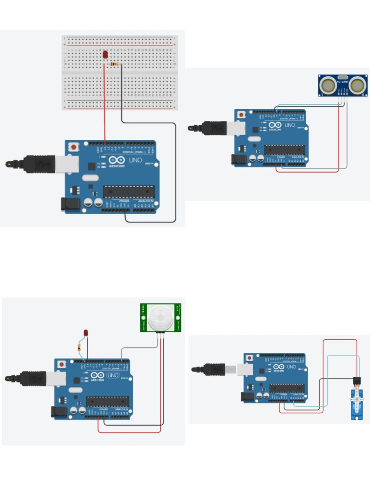

<pre>

    // PIR


    int sensorState = 0;
    
    void setup()
    {
      pinMode(2, INPUT);
      pinMode(LED_BUILTIN , OUTPUT);
    }
    
    void loop()
    {
      sensorState = digitalRead(2);
      if (sensorState == HIGH)
      {
        digitalWrite(LED_BUILTIN , HIGH);
      } else
      {
        digitalWrite(LED_BUILTIN , LOW);
      }
      delay(10);
    }
    
    
    
    ---------------------------------------------------------------------------------------------------------------------------
    // SERVO MOTOR
    
    
    #include<Servo.h>
    Servo servoBase;
    void setup(){
      
      servoBase.attach(A1);
      servoBase.write(0);
    }
    void loop(){
      for(int i = 0;i <= 1800;i+= 10){
        servoBase.write(i);
        delay(500);
      }
    }
    
    ---------------------------------------------------------------------------------------------------------------------------
    // LIGHT SENSITIVE SENSOR
    
    int sensorValue = 0;
    
    void setup()
    
    {
    
      pinMode (A0,INPUT);
    
      pinMode(9,OUTPUT);
    
      Serial.begin(9600);
    
    }
    
    void loop()
    
    {
    
      sensorValue=analogRead(A0);
    
      Serial.println(sensorValue);
    
      analogWrite(9,map(sensorValue,0,1023,255,0));
    
      delay(100);
    
    }
    ---------------------------------------------------------------------------------------------------------------------------
    // TEMPERATURE SENSOR
    
    
    
    char degree = 176;
    const int sensor = A1;
    
    void setup()
    {
      pinMode(sensor, INPUT);
      Serial.begin(9600);
    }
    void loop()
    {
      int tmp = analogRead(sensor);
      float voltage =(tmp *5.0)/1024;
      float tmpCel=(voltage - 0.5)*100.0;
      
      Serial.print("Celsius:\n");
      Serial.print(tmpCel);
      Serial.print(degree);
      delay(1000);
    }
    ---------------------------------------------------------------------------------------------------------------------------
    
    // ULTRASONIC SENSOR 
    
    
    
    const int trigpin =9;
    const int echopin =10;
    long duration;
    int distance;
    void setup()
    {
      Serial.begin(9600);
      pinMode(trigpin, OUTPUT);
      pinMode(echopin, INPUT);
    }
    
    void loop()
    {
      digitalWrite(trigpin, LOW);
      delayMicroseconds(2);
      
      digitalWrite(trigpin, HIGH);
      delayMicroseconds(10); 
      
      digitalWrite(trigpin, LOW);
      duration = pulseIn(echopin,HIGH);
      
      distance =duration* 0.034/2;
      
      Serial.print("\nDistance:");
      Serial.print(distance);
      Serial.print(" cm");
      delay(1000);
    
    }
    
    ---------------------------------------------------------------------------------------------------------------------------
    // GAS SENSOR
    
    
    const int LED_PIN =A1;
    const int SENSOR_PIN =A0;
    const int smoke_threeshold =470;
    
    void setup(){
      Serial.begin(9600);
      pinMode(LED_PIN,OUTPUT);
    }
    
    void loop() {
      int sensorValue =analogRead(SENSOR_PIN);
        if(sensorValue >= smoke_threeshold) {
            digitalWrite(LED_PIN, LOW);
          Serial.print("smoke is detetcted !  Sensor value: ");
          Serial.println(sensorValue);
        }
      else{
        digitalWrite(LED_PIN, HIGH);
          Serial.print("NO smoke. Sensor Value: ");
          Serial.println(sensorValue);
      }
      delay(1000);
      }


      ---------------------------------------------------------------------------------------------------------------------------  


      // Humidity SENSOR


      const int analogIn = A0; // Use A0 for analog input
int humiditySensorOutput = 0;

void setup() {
  Serial.begin(9600);
}

void loop() {
  humiditySensorOutput = analogRead(analogIn);
  int humidityPercentage = map(humiditySensorOutput, 0, 1023, 0, 100); // Mapping to 0-100 percentage range
  
  Serial.print("Humidity: ");
  Serial.print(humidityPercentage);
  Serial.println("%"); // Print percentage symbol
  delay(5000);
}





</pre>